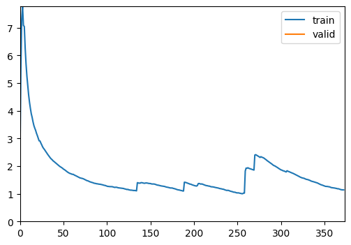
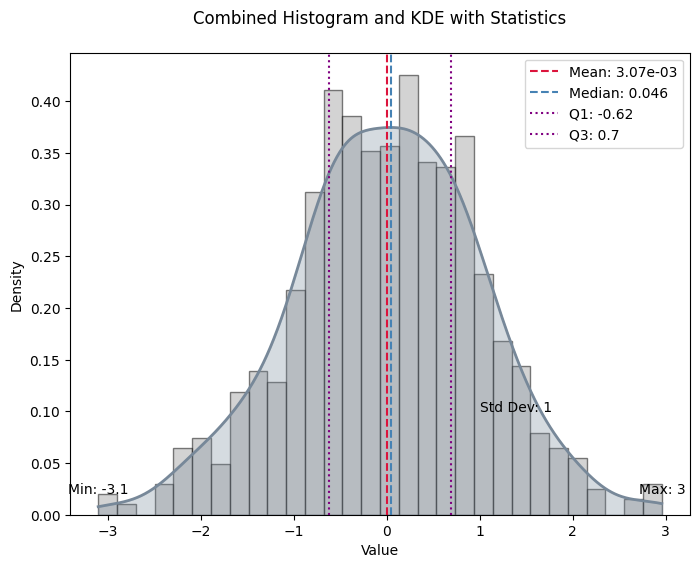

from monai.networks.nets import SEResNet50
from bioMONAI.data import BioDataLoaders
from bioMONAI.metrics import BalancedAccuracy, Precision, accuracyCore
bioMONAI core functions
Imports
This section includes essential imports used throughout the core library, providing foundational tools for data handling, model training, and evaluation. Key imports cover areas such as data blocks, data loaders, custom loss functions, optimizers, callbacks, and logging.
DataBlock
def DataBlock(
blocks:list=None, # One or more `TransformBlock`s
dl_type:TfmdDL=None, # Task specific `TfmdDL`, defaults to `block`'s dl_type or`TfmdDL`
getters:list=None, # Getter functions applied to results of `get_items`
n_inp:int=None, # Number of inputs
item_tfms:list=None, # `ItemTransform`s, applied on an item
batch_tfms:list=None, # `Transform`s or `RandTransform`s, applied by batch
get_items:NoneType=None, splitter:NoneType=None, get_y:NoneType=None, get_x:NoneType=None
):
Generic container to quickly build Datasets and DataLoaders.
The DataBlock class Datablock comes from the fastai library and builds datasets and dataloaders from blocks, acting as a container for creating data processing pipelines, allowing easy customization of datasets and data loaders. It enables the definition of item transformations, batch transformations, and dataset split methods, streamlining data preprocessing and loading across various stages of model training.
DataLoaders
def DataLoaders(
loaders:VAR_POSITIONAL, # `DataLoader` objects to wrap
path:str | Path='.', # Path to store export objects
device:NoneType=None, # Device to put `DataLoaders`
):
Basic wrapper around several DataLoaders.
The DataLoaders class is a container for managing training and validation datasets. This class wraps one or more DataLoader instances, ensuring seamless data management and transfer across devices (CPU or GPU) for efficient training and evaluation.
Learner
def Learner(
dls:DataLoaders, # `DataLoaders` containing fastai or PyTorch `DataLoader`s
model:Callable, # PyTorch model for training or inference
loss_func:Callable | None=None, # Loss function. Defaults to `dls` loss
opt_func:Optimizer | OptimWrapper=Adam, # Optimization function for training
lr:float | slice=0.001, # Default learning rate
splitter:Callable=trainable_params, # Split model into parameter groups. Defaults to one parameter group
cbs:Callback | MutableSequence | None=None, # `Callback`s to add to `Learner`
metrics:Callable | MutableSequence | None=None, # `Metric`s to calculate on validation set
path:str | Path | None=None, # Parent directory to save, load, and export models. Defaults to `dls` `path`
model_dir:str | Path='models', # Subdirectory to save and load models
wd:float | int | None=None, # Default weight decay
wd_bn_bias:bool=False, # Apply weight decay to normalization and bias parameters
train_bn:bool=True, # Train frozen normalization layers
moms:tuple=(0.95, 0.85, 0.95), # Default momentum for schedulers
default_cbs:bool=True, # Include default `Callback`s
):
Group together a model, some dls and a loss_func to handle training
The Learner class is the main interface for training machine learning models, encapsulating the model, data, loss function, optimizer, and training metrics. It simplifies the training process by providing built-in functionality for model evaluation, hyperparameter tuning, and training loop customization, allowing you to focus on model optimization.
ShowGraphCallback
def ShowGraphCallback(
after_create:NoneType=None, before_fit:NoneType=None, before_epoch:NoneType=None, before_train:NoneType=None,
before_batch:NoneType=None, after_pred:NoneType=None, after_loss:NoneType=None, before_backward:NoneType=None,
after_cancel_backward:NoneType=None, after_backward:NoneType=None, before_step:NoneType=None,
after_cancel_step:NoneType=None, after_step:NoneType=None, after_cancel_batch:NoneType=None,
after_batch:NoneType=None, after_cancel_train:NoneType=None, after_train:NoneType=None,
before_validate:NoneType=None, after_cancel_validate:NoneType=None, after_validate:NoneType=None,
after_cancel_epoch:NoneType=None, after_epoch:NoneType=None, after_cancel_fit:NoneType=None,
after_fit:NoneType=None
):
Update a graph of training and validation loss
The ShowGraphCallback is a convenient callback for visualizing training progress. By plotting the training and validation loss, it helps users monitor convergence and performance, making it easy to assess if the model requires adjustments in learning rate, architecture, or data handling.
CSVLogger
def CSVLogger(
fname:str='history.csv', append:bool=False
):
Log the results displayed in learn.path/fname
The CSVLogger is a tool for logging model training metrics to a CSV file, offering a permanent record of training history. This feature is especially useful for long-term experiments and fine-tuning, allowing you to track and analyze model performance over time.
cells3d
def cells3d(
): # The volumetric images of cells taken with an optical microscope.
3D fluorescence microscopy image of cells.
The returned data is a 3D multichannel array with dimensions provided in (z, c, y, x) order. Each voxel has a size of (0.29 0.26 0.26) micrometer. Channel 0 contains cell membranes, channel 1 contains nuclei.
The cells3d function returns a sample 3D fluorescence microscopy image. This is a valuable test image for demonstration and analysis, consisting of both cell membrane and nucleus channels. It can serve as a default dataset for evaluating and benchmarking new models and transformations.
The dataset has the following dimensions: (60,2,256,256), which are in a (z,c,y,x) order: - z: 60 slices in the image - c: 2 channels where channel 0 represents the cell membrane fluorescence, and channel 1 represents the nuclei fluorescence.
- y and x, which correspond to the dimensions of each slice
Engine
The engine module provides advanced functionalities for model training, including configurable training loops and evaluation functions tailored for bioinformatics applications. This module is significantly valuable when there is a need for specific workflows and pipelines that meet specific requirements. For this reason, the classes fastTrainer and visionTrainer have been created, providing tailored implementations inheriting from the Learner class.
read_yaml
def read_yaml(
yaml_path
):
Reads a YAML file and returns its contents as a dictionary
dictlist_to_funclist
def dictlist_to_funclist(
transform_dicts
):
FastTrainer is used for training models in bioinformatics applications, where specific loss functions and optimizers oriented to biological data can be used.
fastTrainer
def fastTrainer(
dataloaders:DataLoaders, # The DataLoader objects containing training and validation datasets.
model:callable, # A callable model that will be trained on the dataset.
loss_fn:typing.Any | None=None, # The loss function to optimize during training. If None, defaults to a suitable default.
optimizer:fastai.optimizer.Optimizer | fastai.optimizer.OptimWrapper=Adam, # The optimizer function to use. Defaults to Adam if not specified.
lr:float | slice=0.001, # Learning rate for the optimizer. Can be a float or a slice object for learning rate scheduling.
splitter:callable=trainable_params,
callbacks:fastai.callback.core.Callback | collections.abc.MutableSequence | None=None, # A callable that determines which parameters of the model should be updated during training.
metrics:typing.Any | collections.abc.MutableSequence | None=None, # Optional list of callback functions to customize training behavior.
csv_log:bool=False, # Metrics to evaluate the performance of the model during training.
show_graph:bool=True, # Whether to log training history to a CSV file. If True, logs will be appended to 'history.csv'.
show_summary:bool=False, # The base directory where models are saved or loaded from. Defaults to None.
find_lr:bool=False, # Subdirectory within the base path where trained models are stored. Default is 'models'.
find_lr_fn:function=valley, # Weight decay factor for optimization. Defaults to None.
path:str | pathlib.Path | None=None, # Whether to apply weight decay to batch normalization and bias parameters.
model_dir:str | pathlib.Path='models', # Whether to update the batch normalization statistics during training.
wd:float | int | None=None, wd_bn_bias:bool=False, train_bn:bool=True,
moms:tuple=(0.95, 0.85, 0.95), # Tuple of tuples representing the momentum values for different layers in the model. Defaults to FastAI's default settings if not specified.
default_cbs:bool=True, # Automatically include default callbacks such as ShowGraphCallback and CSVLogger.
):
A custom implementation of the FastAI Learner class for training models in bioinformatics applications.
Example: train a model with configuration from a YAML file.
# Import the data
image_path = '_data'
info = download_medmnist('bloodmnist', image_path, download_only=True)
batch_size = 32
path = Path(image_path)/'bloodmnist'
path_train = path/'train'
path_val = path/'val'Dataset 'bloodmnist' is already downloaded and available in '_data/bloodmnist'.# Define the dataloader
data = BioDataLoaders.class_from_folder(
path,
train='train',
valid='val',
vocab=info['label'],
batch_tfms=None,
bs=batch_size)
# Define the model
model = SEResNet50(spatial_dims=2,
in_channels=3,
num_classes=8)# Define the trainer with configuration from a YAML file
yaml_path = "./data_examples/sample_config.yml"
trainer = fastTrainer.from_yaml(data, model, yaml_path)
# Train the model
trainer.fit(1)| epoch | train_loss | valid_loss | accuracy | balanced_accuracy_score | precision_score | time |
|---|---|---|---|---|---|---|
| 0 | 1.141451 | 1.084095 | 0.549065 | 0.445552 | 0.528409 | 00:24 |
Better model found at epoch 0 with accuracy value: 0.5490654110908508./home/biagio/miniforge3/envs/biomonai_latest_2/lib/python3.11/site-packages/sklearn/metrics/_classification.py:1833: UndefinedMetricWarning: Precision is ill-defined and being set to 0.0 in labels with no predicted samples. Use `zero_division` parameter to control this behavior.
_warn_prf(average, modifier, f"{metric.capitalize()} is", result.shape[0])
print(trainer.recorder.metric_names)['epoch', 'train_loss', 'valid_loss', 'accuracy', 'balanced_accuracy_score', 'precision_score', 'time']VisionTrainer is used for computer vision applications, where image normalization or other computer vision related settings are needed.
visionTrainer
def visionTrainer(
dataloaders:DataLoaders, # The DataLoader objects containing training and validation datasets.
model:callable, # A callable model that will be trained on the dataset.
normalize:bool=True, n_out:NoneType=None, pretrained:bool=True, weights:NoneType=None,
loss_fn:typing.Any | None=None, # The loss function to optimize during training. If None, defaults to a suitable default.
optimizer:fastai.optimizer.Optimizer | fastai.optimizer.OptimWrapper=Adam, # The optimizer function to use. Defaults to Adam if not specified.
lr:float | slice=0.001, # Learning rate for the optimizer. Can be a float or a slice object for learning rate scheduling.
splitter:callable=trainable_params,
callbacks:fastai.callback.core.Callback | collections.abc.MutableSequence | None=None, # A callable that determines which parameters of the model should be updated during training.
metrics:typing.Any | collections.abc.MutableSequence | None=None, # Optional list of callback functions to customize training behavior.
csv_log:bool=False, # Metrics to evaluate the performance of the model during training.
show_graph:bool=True, # Whether to log training history to a CSV file. If True, logs will be appended to 'history.csv'.
show_summary:bool=False, # The base directory where models are saved or loaded from. Defaults to None.
find_lr:bool=False, # Subdirectory within the base path where trained models are stored. Default is 'models'.
find_lr_fn:function=valley, # Weight decay factor for optimization. Defaults to None.
path:str | pathlib.Path | None=None, # Whether to apply weight decay to batch normalization and bias parameters.
model_dir:str | pathlib.Path='models', # Whether to update the batch normalization statistics during training.
wd:float | int | None=None, wd_bn_bias:bool=False, train_bn:bool=True,
moms:tuple=(0.95, 0.85, 0.95), # Tuple of tuples representing the momentum values for different layers in the model. Defaults to FastAI's default settings if not specified.
default_cbs:bool=True, # Automatically include default callbacks such as ShowGraphCallback and CSVLogger.
cut:NoneType=None, # model & head args
init:function=kaiming_normal_, custom_head:NoneType=None, concat_pool:bool=True, pool:bool=True,
lin_ftrs:NoneType=None, ps:float=0.5, first_bn:bool=True, bn_final:bool=False, lin_first:bool=False,
y_range:NoneType=None, n_in:int=3
):
Build a vision trainer from dataloaders and model
Evaluation
The evaluation module provides functionalities for model evaluation, with several customizations available.
display_statistics_table
def display_statistics_table(
stats, fn_name:str='', as_dataframe:bool=True
):
Display a table of the key statistics.
plot_histogram_and_kde
def plot_histogram_and_kde(
data, stats, bw_method:float=0.3, fn_name:str=''
):
Plot the histogram and KDE of the data with key statistics marked.
format_sig
def format_sig(
value
):
Format numbers with two significant digits.
calculate_statistics
def calculate_statistics(
data
):
Calculate key statistics for the data.
compute_metric
def compute_metric(
predictions, targets, metric_fn
):
Compute the metric for each prediction-target pair. Handles cases where metric_fn has or does not have a ‘func’ attribute.
compute_losses
def compute_losses(
predictions, targets, loss_fn
):
Compute the loss for each prediction-target pair.
from numpy.random import standard_normala = standard_normal(1000)
stats = calculate_statistics(a)
plot_histogram_and_kde(a, stats)
Evaluate_model and evaluate_classification_model are two classes created in order to integrate the evaluation process in a single computation. Evaluate_model can be used on any type of task, whereas evaluate_classification_model is specifically designed for classification tasks.
evaluate_model
def evaluate_model(
trainer:Learner, # The model trainer object with a get_preds method.
test_data:DataLoaders=None, # DataLoader containing test data.
loss:NoneType=None, # Loss function to evaluate prediction-target pairs.
metrics:NoneType=None, # Single metric or a list of metrics to evaluate.
bw_method:float=0.3, # Bandwidth method for KDE.
show_graph:bool=True, # Boolean flag to show the histogram and KDE plot.
show_table:bool=True, # Boolean flag to show the statistics table.
show_results:bool=True, # Boolean flag to show model results on test data.
as_dataframe:bool=True, # Boolean flag to display table as a DataFrame.
cmap:str='magma', # Colormap for visualization.
):
Calculate and optionally plot the distribution of loss values from predictions made by the trainer on test data, with an optional table of key statistics.
evaluate_classification_model
def evaluate_classification_model(
trainer:Learner, # The trained model (learner) to evaluate.
test_data:DataLoaders=None, # DataLoader with test data for evaluation. If None, the validation dataset is used.
loss_fn:NoneType=None, # Loss function used in the model for ClassificationInterpretation. If None, the loss function is loaded from trainer.
most_confused_n:int=1, # Number of most confused class pairs to display.
normalize:bool=True, # Whether to normalize the confusion matrix.
act:NoneType=None, # Apply activation to predictions, defaults to `self.loss_func`'s activation
metrics:NoneType=None, # Single metric or a list of metrics to evaluate.
bw_method:float=0.3, # Bandwidth method for KDE.
show_graph:bool=True, # Boolean flag to show the histogram and KDE plot.
show_table:bool=True, # Boolean flag to show the statistics table.
show_results:bool=True, # Boolean flag to show model results on test data.
as_dataframe:bool=True, # Boolean flag to display table as a DataFrame.
cmap:LinearSegmentedColormap=<matplotlib.colors.LinearSegmentedColormap object at 0x71f6e6425090>, # Color map for the confusion matrix plot.
):
Evaluates a classification model by displaying results, confusion matrix, and most confused classes.
Utils
The utils module contains helper functions and classes to facilitate data manipulation, model setup, and training. These utilities add flexibility and convenience, supporting rapid experimentation and efficient data handling.
add_method
def add_method(
cls
):
attributesFromDict
def attributesFromDict(
d
):
The attributesFromDict function simplifies the conversion of dictionary keys and values into object attributes, allowing dynamic attribute creation for configuration objects. This utility is handy for initializing model or dataset configurations directly from dictionaries, improving code readability and maintainability.
get_device
def get_device(
):
The get_device function is used to detect if the device the code is executed in has got a CUDA-enabled GPU available. If it doesn’t, it returns CPU.
img2float
def img2float(
image, force_copy:bool=False
):
The img2float function turns an image into float representation.
img2Tensor
def img2Tensor(
image
):
The img2Tensor function turns an image into tensor representation after turning it first into float representation.
TargetedTransform
def TargetedTransform(
transform:callable, targets:tuple=('both',)
)->None:
Wrapper for a transform that specifies which input(s) it should be applied to.
This allows fine-grained control when working with paired data such as (X, y), stereo images, or multi-modal inputs.
apply_transforms
def apply_transforms(
image, transforms
):
Apply a list of transformations, ensuring at least one is applied.
Supports: - plain transforms (applied to both images if tuple) - TargetedTransform(transform, targets=…)
# If we pass an empty list of transforms, it should return the input unchanged
test_eq(apply_transforms([1, 2], []), [1, 2])